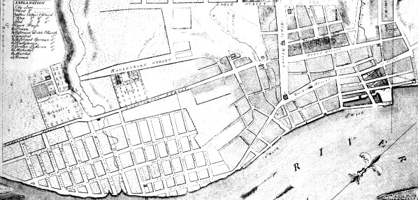

The "North End" is a term of convenience (perhaps coined by the CASHP) used to describe a distinctive neighborhood of old Albany. It has no precise geographical definition! But it was entirely within the third ward and centered on North Market Street - north from about the interesection of Steuben Street - the early eighteenth century stockade line.
The North End extended from the river bank west across Market Street, across Pearl, and let's say ended where the terrain became more inclined - east of Chapel Street. It included the lower course of Foxes Creek. It extended north into Watervliet and probably included the Quackenbush house and property. In 1683, a church subscription list considered those living "outside the North Gate" as a distinct group. At that time, Barent Albertse Bradt's house was a neighborhood landmark.
The North End also encompassed the emerging waterfront area located east of Market Street. The new streets, Montgomery, Dock, and Quay, ran parallel to and were east of North Market. They were dotted by and then lined with water and trade-related enterprises. Albany-built boats and ships were launched and serviced at the so-called "Watering Place."
By the time of the Revolution, the area began to be more populated as newcomers and sons of mainline families as well built new if undistinguished homes in the vicinity of Foxes Creek. Early Albany people living in the North End mostly were engaged in production and service activities and owned or rented modest homes. By that time, the boarding house and brickyard of newcomer Paul Hogstrasser attracted German speaking newcomers. Later, merchant John Fondey, Jr.'s home at Market and Van Tromp Streets was a North End landmark.
The brickyard, distilleries, and tan pits belonging to the Quackenbush family and located nearby today's Quackenbush House would have been the northern anchors of the North End.
This lower-lying, settlement area is distinct from its more westerly (upstream and uphill) neighbor - the "Woutenbergh."
The detail on the left is from a copy of a British army map in the collection of the Library of Congress showing houses along the road from Albany at Foxes Creek north to the Manor House.The map is dated 1758. Those buildings were inhabited by overflow Albany people - many of whom were at least as much a part of the Albany community economy as they were Van Rensselaer tenant farmers. Some of those properties were described in the will filed by the Patroon in 1747.
The North End of the pre-industrial era was located mostly (but not exclusively as the northern "city line" existed chiefly on paper) within the old city limits and should not be confused with "North Albany" or "Limerick," a working-class community located north of the Van Rensselaer Manor house and settled much later!

Sources: We find little documentable evidence for the use of this term during the seventeenth and most of the eighteenth century. However, we believe it has some utility in describing the water-level fringe area of the city north of its initial pre-urban core.
posted: 4/10/04; last revised 10/13/13